Contents
Nuvii brings together what usually lives across a to-do list, a project board, a calendar, a notebook and spreadsheets, and ties each piece of information to its next action. It is a personal app: everything belongs to you, and the people in the Team area are contacts you keep track of, not accounts of other users.
This manual walks through every screen in the order you meet them. Screenshots use made-up data, are shown in Portuguese and may show details from earlier versions.
Items marked changing were updated on Nov 27 and 28, 2026 and may still change.
1. First launch

The first launch takes about two minutes, and almost everything can be skipped.
| Screen | What it is for |
|---|---|
| Splash | Shows the brand while the app prepares the encrypted database on the device. |
| Sign in | Sign in with your Google or Apple account. The account keeps your access and links Nuvii on your phone, tablet and browser. |
| Welcome | Introduces the app. Has Get started and the option to restore a backup. |
| Benefits | Three animated cards: capture in seconds, never miss a follow-up, and write your way. Skip goes straight to the profile. |
| Your profile | Only your name is required. Birth date, CPF (Brazilian tax ID), sex, email and phone are optional and stay on the device. |
| Artificial intelligence | Shown only when the device has its own AI. Choose to use the device AI (nothing leaves it) or go without AI, which is the default. |
| Biometrics | Asks whether Nuvii should require Face ID, fingerprint or the device passcode on opening. You can change this later in Settings > Security. |
| Sync device | Invites you to bring data from another device through sync. |
| Restore backup | Opens a .nuvii file with its password. Works only on a clean install. |
| First steps | A three-minute guide: what weighs most on your day, import a list by pasting text (each line becomes a task), capture a task the way you speak, and turn on two rituals (morning summary at 8 AM and Friday review at 4 PM, at most 2 alerts a day). |
Lock. With the lock on, Nuvii opens on the "Nuvii locked" screen and asks for biometrics or the device passcode. It asks again after the time in the background you choose.
2. Getting around
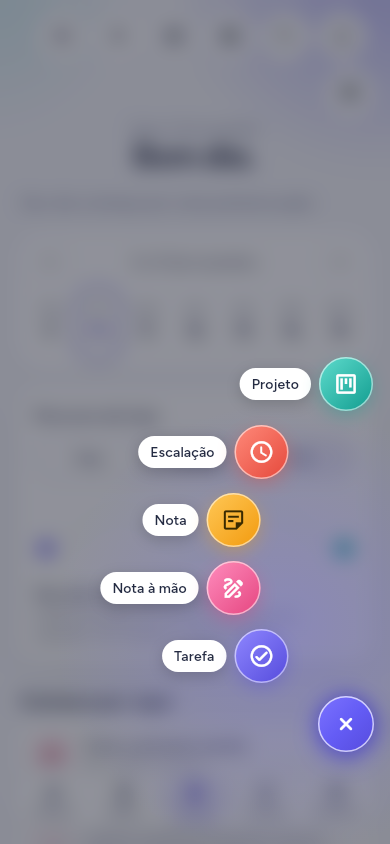
Navigation island. The five areas sit at the bottom, in this order: Team, Notes, Home, Tasks and Projects. Each area remembers where you were.
Top bar. It is the same in every area and does not scroll: the area title, search, chats, the notification bell and your profile, which leads to Settings. Anything specific to one area (context, filters, trash, contacts) appears as a shortcut at the start of the content.
Quick action button (+). The purple button opens a fan menu with up to five shortcuts to create: task, handwritten note, note, prioritization, project, idea, habit, mind map, Kanban board or talk to the assistant. No shortcut is fixed: you pick which ones and their order in Settings > Quick action button changing. Holding the button opens the voice assistant when AI is set up.
Context. Areas have a context shortcut: All, Personal or Work. It filters what you see; the choice applies only to this device.
Detail screens. A task, project, note or person opens on top of the area. On a phone, the arrow takes you back; on a tablet, the detail opens beside the list (see section 11).
3. Home

Home answers "what is my next action?". At the top are the date, a greeting and a sentence that sums up the day, such as "2 follow-ups need you now".
Day strip. Shows the week with dots on days that have items. The arrows change the week, and tapping a day opens the calendar.
Path. Pick Today, Week or Month.
- Today: each priority of the day becomes a point on the path; as you complete them, the line moves forward and shows "Now:" with the next one.
- Week: progress for each day of the week and how many follow-ups are open.
- Month: the month calendar; tap a day to see what is on it.
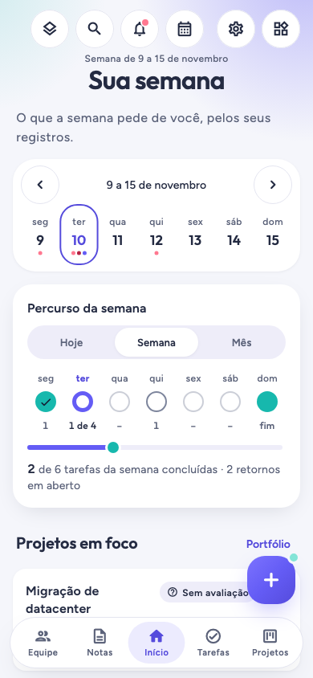
Sections that appear when there is data (with no data, the section hides):
| Section | What it shows |
|---|---|
| Follow-ups | Prioritizations with a follow-up due or overdue, with the Log contact shortcut. |
| Today | Priority tasks for the day. Complete them right there and pin a task to Today. |
| Agenda | The day's appointments, including device calendars (Google, iCloud, Outlook) if you turned them on. |
| Birthdays | Team people with a birthday. |
| Today's habits | Habits planned for the day, checked with one tap. |
| Health now | Last night's sleep and today's steps, when Health is on. |
| Projects in focus | Running projects, with the next milestone. |
| Project activities | How many project activities are with you, with the My activities shortcut changing. |
| Tips of the day | Suggestions computed on the device, without AI, such as "You have 1 overdue task". |
Start here. With no data at all, Home shows four shortcuts: create your first task, track a prioritization, write a note and open a project.
Weekly report. Opened from the tips, it shows completed and overdue tasks, prioritizations with contact and events, compared with the previous week. Everything is computed on the device.
Calendar

Opens from the day strip. It has Day, Week (hourly grid) and Month views. It brings together task due dates, prioritization follow-ups, Nuvii events, birthdays and, if turned on, device calendars. New event asks for a title, an optional description, all day or a start and end.
4. Tasks

The area for capturing and doing. Filters at the top are views of the same tasks:
| Filter | What it shows |
|---|---|
| Inbox | What you captured without a date, to organize later. |
| Today | The day summary (progress ring, how many are left and overdue ones), then the day's tasks and overdue ones. |
| Upcoming | Tasks with a future date, grouped by day, with the busiest day marked. |
| Prioritizations | Tracking with a customer and a follow-up deadline (see below). |
| Routines | Tasks that repeat daily, weekly or monthly. |
| Habits | Your habits and today's check-in. |
| All | Everything you created. |
Gestures. Swipe a task right to complete it and left to postpone it one day. Undo is always available.
Checklist. A task with items shows a counter (for example, 2/5) and expands its items right in the list. It completes only when every item is checked; Nuvii offers "Check all and complete".
Lists

Lists are task folders with any name you want: groceries, wishes, goals. They sit in a strip above the tasks.
- New list creates a list; a list can contain lists (one level).
- In an open list, type in the top field and confirm to add one item after another.
- The list menu has Edit, New list inside, Archive and Delete. Deleting a list does not delete its tasks.
- Each project has an automatic list with its tasks.
Filters and sorting
The Filters shortcut opens the "Filters and sorting" sheet: sort by due date, priority, creation or manual order (hold and drag); group by day, project or person; show completed; minimum priority. Saved filters keep named combinations, such as "Waiting on others".
Task detail

| Field | How it works |
|---|---|
| Title and description | Edit in place; they save on their own. |
| Status | Inbox, To do, In progress, Waiting (asks for the reason) or Done. |
| Due date | Date and, if you want, time. |
| Priority | Critical, High, Normal, Low or none. |
| Assignee | You or any name. |
| Reminder | At the due time, or 15 min, 30 min, 1 h or 1 day before. |
| Alarm | Rings like an alarm clock at the chosen time, even on silent. |
| Project and list | Links the task to a project or moves it to a list. |
| Repeat | Creates an open copy of the task, with or without a date. |
| Checklist | Items you can check, uncheck and remove. |
| History | Everything that changed in the task, with date and time. |
The menu has Pause or Resume and Delete (moves it to the trash and cancels the reminder).
Prioritizations
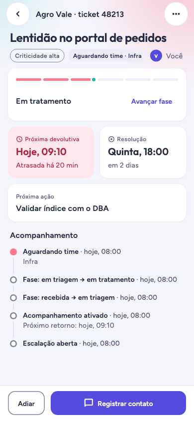
A prioritization tracks a case with a customer and a follow-up deadline, such as a critical ticket. The list is sorted by the next follow-up.
- Create: from the + button, a prioritization starts as a draft with just a title. Complete tracking asks for customer, ticket, next action and next follow-up to activate it.
- Phases: Received, Triage, In progress, Monitoring and Resolved. Advance phase moves it forward.
- Detail cards: phase, next follow-up (on track, due in, overdue), expected resolution and next action.
- Log contact: channel (phone, WhatsApp, email, meeting, chat, other), a summary of what was agreed and the next follow-up, which is required. Nuvii only records it; nothing is sent to the customer.
- Postpone follow-up asks for the reason. Reopen asks for the phase, the reason and the next action.
- Tracking: the timeline of everything that happened.
Routines
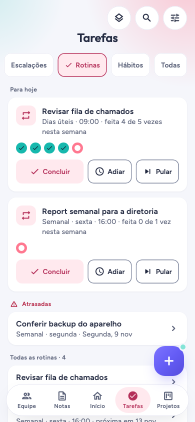
Routines create an occurrence each time they repeat. The screen shows For today, Overdue and All routines, with this week's count.
- New routine: title, repetition (daily, weekdays, weekly on chosen days, monthly on a fixed day or the last day), interval, time or all day, and start date.
- On each occurrence: Complete, Postpone (tomorrow, in 2 days, next week or another date) or Skip.
- Edit asks whether it applies to this and future occurrences or to the whole routine. End series stops new occurrences and keeps the history.
Habits
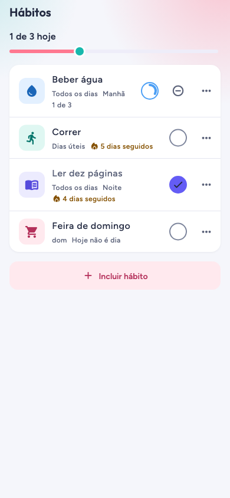
Habits are checked day by day. Each has a name, color, icon, optional start and end dates and a goal. With Health on, a habit can check itself when the steps, sleep or workout goal is reached; Nuvii never unchecks. The habit detail shows the streak and history. Archived habits have their own section.
5. Projects
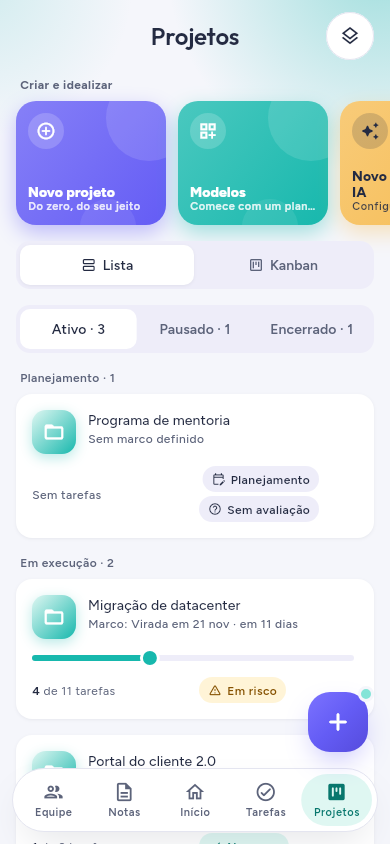
Projects is a professional planner that uses the same tasks as the Tasks area.
Portfolio
- Create and ideate (Studio): four shortcuts at the top: New project (from scratch), Templates, With AI and Improvements.
- Views: List or Kanban. In Kanban, drag a project between columns; to close it, Nuvii asks whether it was completed or cancelled.
- Groups: Active and Paused. Completed projects appear under Deliverables.
- Project card: status, declared health (Not assessed, On track, At risk, Blocked), next milestone and progress from its tasks. With no tasks, the card says "No tasks", never 100%.
- My activities: lists the project activities assigned to you (With me) and the ones you delegated (Delegated), with overdue ones highlighted changing.
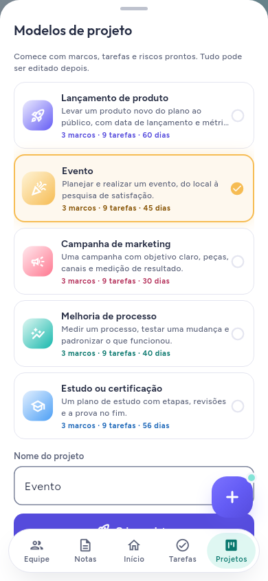
Templates. Five ready-made plans with milestones, tasks and risks: Product launch, Event, Marketing campaign, Process improvement and Study or certification. Pick one, name it and create; everything can be edited later.
New project with AI. Describe what you want to achieve; the AI proposes an objective, milestones, tasks and risks, and you tick what goes in before creating. You can redo it with an instruction, such as "6-week deadline". Without AI set up, the screen explains how to turn it on.
Project form. Name, description, start and end dates or a duration in days (the end is calculated), priority, owner (Me or a Team person), participants (Team teams and people) and context changing.
Project folder
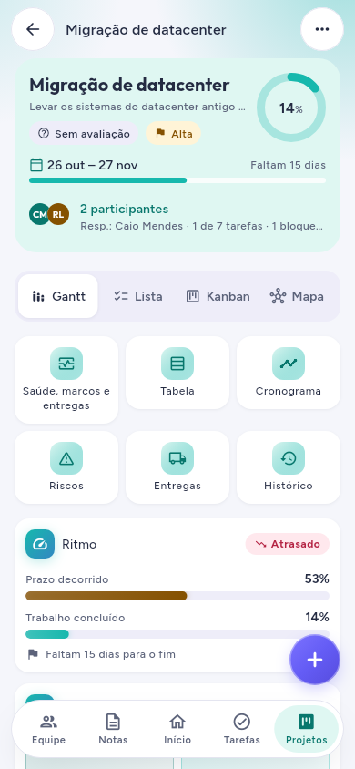
Opening a project shows its folder.
Header changing: name, description, priority, health, progress ring, period and days left, participants, owner and the task summary (how many done and blocked).
Task views: Gantt, List, Kanban and Map. They all show the same tasks.
| View | How to use it |
|---|---|
| Gantt | Bars over time. Tap a day to create a task; drag tasks from the "No date" lane onto the calendar. Arrows show dependencies. |
| List | A to-do list with checklists, to tick off what is done. |
| Kanban | Columns by status. Press and drag or use "Move to…". Blocking and reopening ask for a reason. |
| Map changing | A live map of the project: the project as a planet with a progress ring, tasks as capsules, activities as diamonds and notes as pages. Tap an activity to complete it (with confirmation); hold an item to focus on it. Tasks are not completed from the map. |
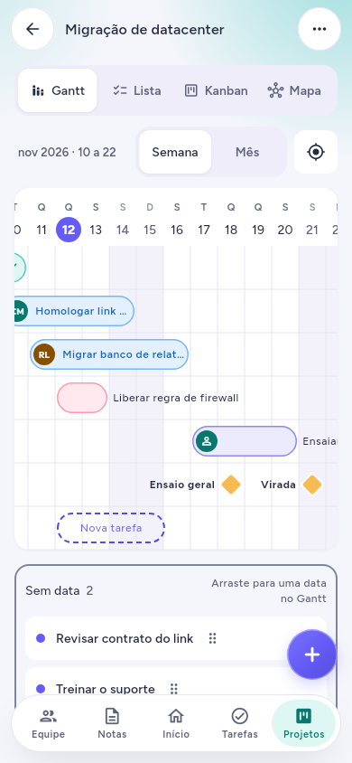

Tools (tile grid): Health, milestones and deliverables; Table; Timeline; Risks; Deliverables; History.
Planner (panels below the tools):
| Panel | What it shows |
|---|---|
| Pace | Time elapsed versus work done: Ahead, On track or Behind. |
| This week | Completed, due in 7 days, overdue and waiting. Copy weekly status produces ready-to-send text. |
| Budget | Planned, spent and balance, with entries. Warns when spending goes over plan. |
| Milestones | The milestone track with dates. |
| Team and workload | Open and overdue tasks per assignee. |
| Risk matrix | Probability × impact in a 3 × 3 grid. |
| Next 7 days | What is due this week. |
Documents. Each project keeps mind maps and notes. The notes also appear in Notes.
Project menu: Edit project, New task, Health, milestones and deliverables, Weekly status, Print or PDF and the AI actions (such as Summarize project).
Project task
Opens in its own screen, with title, dates within the project period, assignee, priority and checklist (the activities).
- Depends on changing: choose the previous task. This task can only start and finish after the previous one ends; Nuvii warns when dates conflict and offers to adjust them.
- Activity assignee changing: each checklist item can be with you (it shows in your to-do in Tasks), with someone else (it counts as delegated) or with no one.
- A task completes by itself when all its activities are done.
Health, milestones and deliverables
Health is your assessment, not a calculation: pick the status, write the reason and the date. Milestones have a name, an expected date and the option "Required to complete the project". A project can also be completed, reopened, paused or archived (archived is read-only).
Table and Timeline
- Table: Task, Status, Due and Priority columns. The Task column stays fixed and the rest scrolls sideways.
- Timeline: progress by milestone and the timeline of dated milestones and tasks.
Risks, blockers and decisions

- Blockers: the blocked task, the reason and since when. Follow up schedules the next chase; Log unblock closes it.
- Risks: probability and impact as you declare them, planned response, owner and deadline. Status can be Open, Mitigating, Accepted or Materialized. Re-declaring the levels keeps the previous ones in the history.
- Decisions: what was decided, rationale, date and who decided, with an optional source note. A decision can be superseded by another or revoked.
Deliverables and History
- Deliverables: completed milestones and tasks, newest first, plus completed projects.
- History changing: everything that happened in the project, with filters All, Project, Tasks, Activities, People and Budget and documents.
Continuous improvement
Ideas go from capture to measuring the benefit: Captured, Under review, Approved, Measuring. Each idea has a problem, a hypothesis and an assessment. It can be postponed, discarded (with a reason) or converted into a project, which keeps its origin. The observed benefit is recorded with value, unit, period and evidence.
6. Notes

The library starts with the shortcuts to create:
| Type | What it is for |
|---|---|
| New note | Text, lists, tables and images. |
| Kanban | A board of columns and cards that do not become tasks. |
| Mind map | Ideas branching from a central node. |
| Freehand | A blank page for pen, finger and eraser. |
| Document | Imports PDF, Word, Excel, PowerPoint and Apple files, with a reading mode. |
Then come Favorites (when there are any), Folders and Recent. See tree shows every folder and subfolder.
Folders. Each folder has a name, color and icon and can have subfolders. A private folder hides its content until you confirm with Face ID, biometrics or the device passcode. Use "Move to…" to reorganize.
Editor
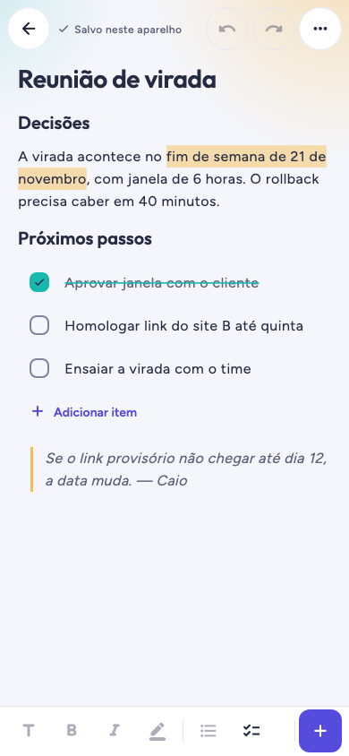
- Rich text with headings, lists, checklists, links, tables, images and attachments.
- Insert opens the blocks; a table gets rows and columns from its own bar.
- Links connects the note to another note, task, project or idea; whatever cites the note appears under "Cited by".
- Convert passage turns the selected text into a task, with a preview before creating.
- Find follow-ups looks for promises to get back to someone in the note and proposes chase tasks.
- Export note as Markdown or PDF; Print or PDF opens the system dialog.
- If the app closes while you edit, Nuvii offers the newer draft.
Handwriting

Pen, finger and eraser on a blank page or in a block inside a note. On iPad, it works with Apple Pencil.
Imported documents
The file stays only on the device where it was imported, never in the cloud, in sync or in backups. Only the title, keywords and folder sync. On another device, the screen asks you to pick the same file. Search also looks inside document content.
Trash
Deleted notes and folders stay in the trash for 30 days. You can restore them or delete them for good.
7. Team

Team is your address book of the people you work with. Only you see this content, and Nuvii never ranks, scores or compares people.
Team home:
- Search for people and teams.
- Your week with the team: this week's 1:1s, feedback to revisit, IDP goals coming due and reminders (such as a long time without a conversation, or a birthday).
- Teams: colored folders with an icon; a person can be in several.
- Recently added and Delegated (tasks you handed off, which go on the next 1:1 agenda).
- Timeline: feedback, 1:1s, achievements and IDP goals in order.
- Contacts (A–Z list with team filters) and Add shortcuts.
New person. Name and reference (role or job title) are required. Birthday, phones, emails and teams are optional. Import from contacts suggests people from the device address book and fills in the details; contacts never leave the device. You can also import several at once.
Person profile
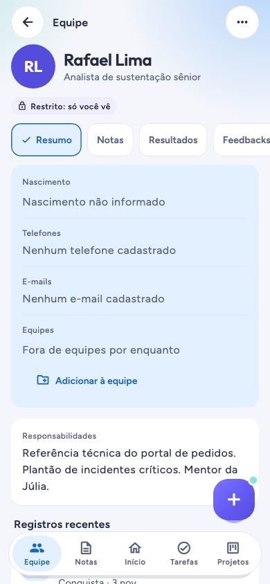
| Tab | What it keeps |
|---|---|
| Summary | Birth date, phones, emails, teams, responsibilities and recent records. |
| Notes | Free notes about the person. |
| Results | Recognition and achievements, with facts and evidence. |
| Feedback | Context, observed behavior, impact and next step. |
| 1:1 | Agenda (with suggestions from what was left open), conversation notes and agreed actions, which become tasks. |
| IDP | Individual development plan: draft, activation (requires owner, outcome, deadline and a checkpoint), activities, checkpoints and revision history. |
| Goals | Individual goals with values you enter and a progress history. |
Private notes stay only on the device, open with Face ID and never sync or go into backups.
Person menu: Open profile, Quick feedback (situation, behavior, impact and agreement), Schedule 1:1, Delegate task, More actions, Edit and Delete.
8. Search, notifications, chats and assistant
Search

Searches everything, straight from the device and without internet: tasks, prioritizations, projects, notes and documents, events, people, folders and lists. Type the way you speak, for example "overdue tasks" or "meeting with Ana tomorrow"; a quick answer appears at the top. Type filters help narrow it down, and recent searches are kept.
Ask Nuvii gathers what you already wrote about a topic and answers with numbered sources (requires AI).
Notifications
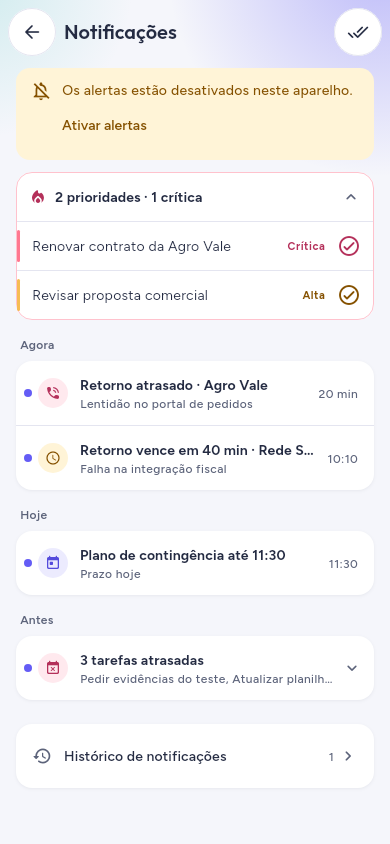
The center gathers what needs action (follow-ups coming due, overdue tasks, high and critical priorities) and the day's history. Each item has quick actions such as Log contact, Postpone and Open. On the lock screen the alert is generic, with no title or customer name.
Chats
Chat with other Nuvii users by phone number, on every plan.
- Confirm your number by sending a ready-made message through WhatsApp or Telegram, with no SMS.
- New chat searches by name or number; groups are available too.
- A message can become a task with one tap.
- Chat settings: change number, let people find you by number, and blocked contacts.
Assistant
Say or type what you need, for example "task call the customer tomorrow at 9". The assistant shows what it will create (task, prioritization, project, note, idea or event) and saves only after you confirm. It only creates new items and needs AI to be set up. Nuvii never records or sends audio.
AI actions
In notes, projects and prioritizations, the AI menu offers summarize, improve text, extract tasks, summarize project and draft a follow-up. Before anything is sent, you see the exact text and where it goes.
9. Settings

Open Settings from your profile in the top bar.
| Item | What it does |
|---|---|
| Profile | Name, optional photo and personal details, all on the device. |
| Nuvii account | Linked Google or Apple account, connected devices, Nuvii on your computer (scan a QR code), AI assistants connected through MCP, download account data, sign out and delete the account. |
| Nuvii Pro | Monthly subscription: real-time sync through Nuvii Cloud, the Work workspace, Nuvii web, API, integrations and AI assistants. Subscribe, restore and manage. Billing starts on Dec 7, 2026. |
| Appearance | Light, dark or system theme; five styles (Traço Vivo, Classic, Futuristic, Neobrutalism, Aseptic); density; reduce motion. |
| Language and region | Portuguese, English or Spanish; region (formats and holidays); first day of the week; 12- or 24-hour clock. |
| Quick action button | Show or hide the button, pick up to five shortcuts and their order. |
| Alerts and quiet hours | What alerts show (full, type and time, or discreet), when to alert, daily summary, plan tomorrow, weekly review, Do not disturb, work hours only and maximum alerts per day. |
| Calendars | Show device calendars in Nuvii. |
| Health | Read steps, sleep and workouts to check habits. |
| Security | Lock the app with biometrics or passcode and choose after how long. |
| AI provider | No AI (default), device AI, Nuvii Cloud (Pro, Work only), OpenRouter with your own key or your own server (Ollama, LM Studio, compatible). Shows what leaves the device and what never does, and permission per purpose. |
| Tips and report on Home | Turns tips on and, optionally, rewrites them with AI. |
| Your data | The profile data and what each item is for; export and erase the profile. Inside it, Export my data creates a readable copy in JSON, CSV and Markdown; people content is included only if you tick it. |
| Backups | An encrypted copy with your password, reminder, how many to keep, verify and restore. |
| Sync | iCloud or Google Drive, end-to-end encrypted, or Nuvii Cloud with Pro. Devices, an option to include Team and private folders, saved versions from conflicts and erase cloud data. |
| About Nuvii | Version and open-source licenses. |
10. Nuvii on your computer
- On your computer, open app.nuvii.com.br. The page shows a QR code.
- On your phone, go to Settings > Nuvii account > Nuvii on your computer and scan the QR code.
- Confirm on your phone the number shown in the browser.
The web version has no login or password of its own. Tick "trust this browser" to stay signed in for up to 60 days; do not tick it on a public computer. You can remove trusted browsers from your phone. Nuvii web is part of Nuvii Pro.
11. Tablets, foldables and keyboard
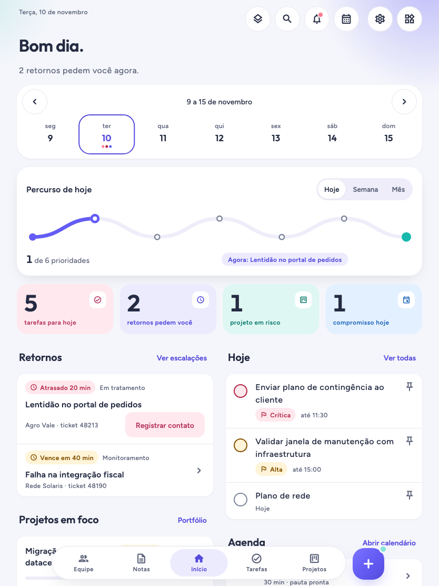
- Tablet and phone: the navigation island sits at the bottom, with the + button.
- Computer and web: navigation changes with the window width, from the island to a narrow side rail and then a full sidebar.
- List and detail side by side: on wide screens, Tasks, Projects and Team open the detail beside the list. Notes shows the folder tree on the left and the editor on the right.
- Wide Home: adds indicators per area (tasks, follow-ups, appointments, projects at risk).
- Foldables: half-open with a vertical fold, Tasks and Projects put the list on one side and the detail on the other.

Keyboard shortcuts (⌘ on Mac and iPad, Ctrl elsewhere):
| Shortcut | Action |
|---|---|
| ⌘N | Create (opens the + button menu) |
| ⌘F | Search |
| ⌘1 to ⌘5 | Team, Notes, Home, Tasks, Projects |
12. Privacy at a glance
- Data lives in an encrypted database on the device.
- AI is optional and off by default. Team, feedback, IDP and profile data never go to AI.
- Sync through iCloud or Google Drive is end-to-end encrypted.
- Documents imported into Notes never leave the device.
- Lock screen notifications show no titles or names.